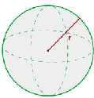

General Area Calculator
Esfera
V = 4⁄3 · Π · r3 -> El volumen es igual al producto de cuatro tercios de PI (3'1416...) por el cubo del radio.
En geometría, una superficie esférica es un lugar geométrico o el conjunto de los puntos del espacio cuyos puntos equidistan de otro interior llamado centro. Los puntos cuya distancia es menor que la longitud del radio forman el interior de la superficie esférica.
La unión del interior y la superficie esférica se llama esfera.